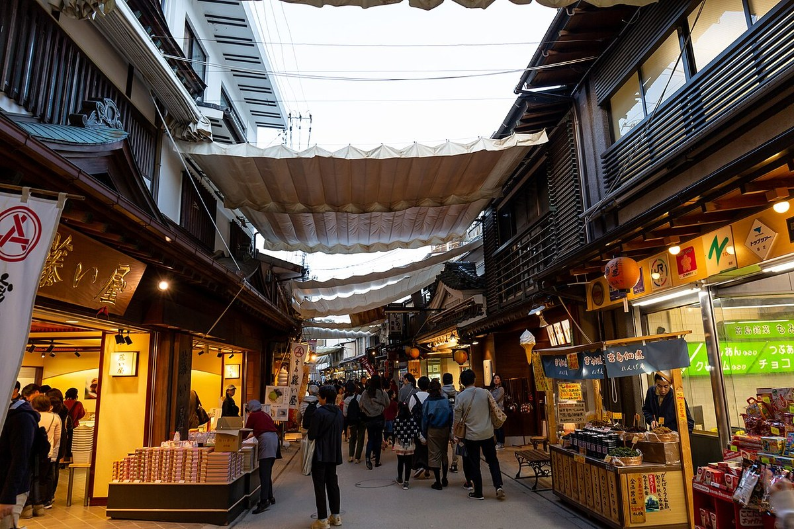
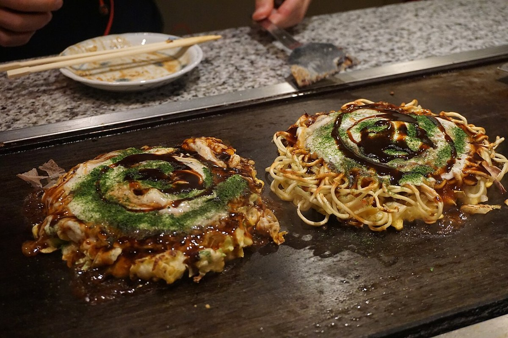

1
朝
起床・出発
Hotel HAGOROMO（中区羽衣町6-5）203号室
2日目のスタートはホテルから。今日のゴールは広島グリーンアリーナのBUMP OF CHICKEN（開場17:00／開演18:00）。午前は3案から1つ選んで観光、午後は市内に戻って物販→開演の流れ。
午前の観光 — 3案から選ぶ
ボタンを押すと、その案のスポットと地図のピンが切り替わります。
2
3
4
お昼
表参道商店街
宮島 表参道商店街
焼き牡蠣・あなご飯・もみじ饅頭を食べ歩き。帰りは13:10–13:25頃のフェリーで宮島を出て、14:30頃に市内へ戻る。

ランチは宮島であなご飯か牡蠣がおすすめ。市内に戻ってからゆっくり食べるのでもOK。


5
昼〜午後
ランチ＆市内へ戻る
選んだ案に合わせて
ランチは案ごとに：A 宮島（あなご飯・牡蠣）か市内／B 呉（海自カレー）／C 紙屋町。いずれも夕方の物販と開演に間に合うよう、市内中心部へ戻ってくる。

6
整理券の枠
物販
広島グリーンアリーナ 物販ブース
物販はLINE「mogily」のデジタル整理券制。当選したのはゆりっぺの整理券のみなので、ゆりっぺが1人で入場して購入し、ユウキは外で待つ形。
整理券の時間枠は未定。枠の時間に合わせて前後の予定（ランチ・時間つぶし）を調整する。マイバッグ持参（袋の配布なし）。整理券があっても在庫の保証はないので、買うものは優先順位をつけてゆりっぺに渡しておく。
7

8
17:00／18:00
開場・開演
広島グリーンアリーナ
開場17:00、開演18:00。最寄りの原爆ドーム前／紙屋町西から徒歩約10分。BUMP OF CHICKENのライブを楽しむ。